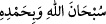

Bir adam İbn Sâlim’e: “Bizden kesb (çalışıp kazanmak) ile mi, yoksa tevekkül ile mi
kulluk etmemiz istenmektedir?” diye sordu. İbn Sâlim: “Tevekkül, Rasûlullah (s.a.)’in
hâlidir. Ümmeti kendisinin hâli olan tevekkül derecesinden düştükleri zaman hallerinin
zayıflığı sebebiyle onlara kesbi sünnet kılmıştır. O dereceden aşağı düşünce Rasûlûllah
(s.a.) onları sünneti olan çalışıp kazanarak geçimini taleb derecesinden düşürmemiştir.
Eğer bu da olmasa helâk olurlar.”
Denilir ki: Tevekkül edenlerin avâmı kendilerine nimet verilince şükrederler,
verilmeyince sabrederler. Havâssı ise nimet verilince başkalarını kendilerine tercih
ederler (îsâr); verilmeyince şükrederler.
Denilir ki: Hak Teâlâ evliyâya tevekkül ettikleri zaman umdukları ve ummadıkları
yerlerden sebepler yaratarak cömertlikte bulunur. Asfiyâya (seçkin kullarına) ise
kendilerinden ihtiyacı gidererek cömertlikte bulunur. Kişinin bir ihtiyacı kalmazsa ne
zaman talebde bulunur ki?
Yine denilir ki: Tevekkül, annesinin memesinden başka sığınacak bir yer bilmeyen bir
çocuk gibi olmaktır. İşte mütevekkil kimsenin de kendisi için Allah’tan başka bir sığınak
görmemesi gerekir.
Mesnevî’de der ki:
Tevekkülden daha güzel bir kazanç yoktur
Teslimden daha sevgili ne var ki?
Çocuk, tutamaz ve yürüyemezken
Bineği ancak babasının boynu olur
Eli ayağı ortaya çıkıp da yaramazlığa başladı mı
Belâya uğrar, zorluğa düşer
Biz Hakk’ın âilesi ve süt isteyen yavrularıyız
Peygamber, “İnsanlar Allah’ın âilesidir” buyurdu
Gökten yağmur veren
Rahmetiyle ekmek vermeye de güç yetirir
“O’nu hamd ile tesbih et.” Yâni Allah Teâlâ’yı kemâl sıfatlarla över olduğun halde
önceki nimetlerine şükür ile nimetlerinin artmasını taleb ederek noksan sıfatlardan,
vehim ve hayâle gelen her şeyden tenzih et.
Bir hadîste şöyle buyrulmuştur: “Kim her gün yüz defa
“ (Allah’ı hamd ile tesbih ederim.) derse, günahları deniz köpüğü
kadar bile olsa affedilir.”[241] Nitekim Fethur’Rahmân’da böyle geçmektedir
“Kullarının” görünen ve görünmeyen “günahlarını O’nun” ölmeyen diri olan
Allah’ın “bilmesi” vâkıf olması sana “yeter.” Allah onlara yaptıklarının tam olarak
karşılğını verir. O’nunla beraber başkasına ihtiyaç duymazsın.